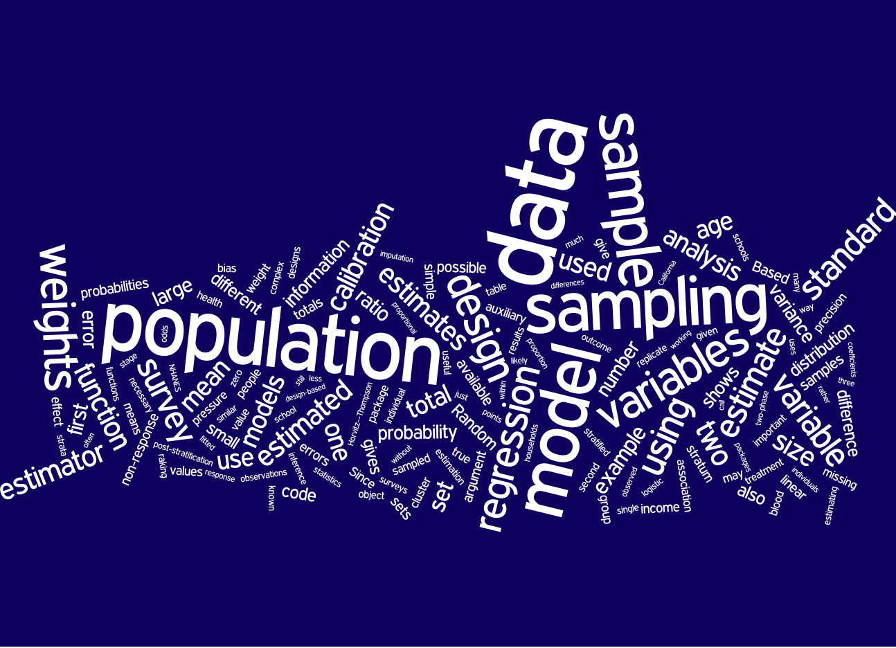

Complex Surveys: a guide to analysis using R

This is the web site for the book Complex Surveys: a guide to
analysis
using R, published by Wiley.
Now available
for the Kindle (Sept 2011)
The initial price will be
about half what is charged for
most survey sampling texts. It is
softcover, which explains part of the lower price. If you are concerned
that price reflects quality, then just wait a year or so and the price
should be higher.
You can download the table of contents and preface to see what is in the book, and why. The
book is based around the R survey package, and
includes a lot of code, a lot of data, and relatively few formulas.
Not quite all the data sets are up here yet...
Data
Data sets used in exercises in the book. Many of these are of realistic
size, ie, large
- The California Schools/Academic Performance Index population and
samples are built into the survey package. Load them with
data(api). [At the moment this does not include
apisrs which you can download here]
- NHANES III imputations(31Mb) in SQLite
format.
Original source National
Center for Health Statistics
- various XPORT files(10Mb) from NHANES 2003-2004
and
2005-2006, also from the National Center for Health Statistics.
Detailed documentation is at the NCHS links.
- California Health Interview
Survey 2005
public use file (30Mb, in Stata format,'adult.dta' in the
book), and the documentation
- Data from SIPP, the Survey of
Income and Program Participation, wave 1 of the 1996 panel, in a
SQLite database(98Mb)
- Scottish Household Survey data subset(1.5Mb)
from PEAS.
The full public use data can be obtained by registering with the
UK Data
Archive
- Family Resources Survey data subset(0.2Mb) from
PEAS
The full public use data can be obtained by registering with the
UK Data
Archive
- The PPS sample of US election data used in section 3.3 and the
population it came from
are built in to the survey package and can be loaded with
data(election)
- The map examples based on BRFSS data used the version of the BRFSS
GIS data that was available in late 2008. In March 2009 the data file was
changed, omitting the FIPS codes. To make the map code in the book work,
you need the old version.
- Data (mscm.txt) from the Mothers' and
Children's Morbidity Study, used in Chapter 10. These data were obtained
from Patrick Heagerty's web
site for Analysis of Longitudinal Data by Diggle, Heagerty,
Liang & Zeger.
- The BRFSS 2007 data as a HUGE (245Mb) SQLite
database.
Graphs
- Color plots of the 2004 US election: a sample of 5000 votes, colored
and jittered, with dots or transparent circles. A color version of
Figure 3.1, mentioned in section 4.6.1
- Coplot of systolic and diastolic
blood pressure by age and sex, data
from NHANES 2003-2004, mentioned in section 4.5 of the book.
- code for the combined city/count BRFSS
maps at the end of chapter 4. This uses the CDC 'SMART' data
- Health insurance by state and age, a
color version of Figure 4.24. Unfortunately, the CDC have modified the
'SMART' GIS data to exclude the FIPS codes for states. To make the code
in the
book work, you need the old version
- Code for Figures 4.25 and 4.26, and
other variations on maps with both city and state data. These need the the old version of the BRFSS GIS data (with FIPS
codes). Unzip the file in a subdirectory called GIS and run the
code in the parent directory.
Other books you might prefer
Some (otherwise) reasonable people think that a book on survey analysis
should have lots of formulas, shouldn't be tied to a particular
software system, and should be written by someone with more of a
publication record in
survey methodology. There are many excellent books available that satisfy
these criteria, and I can recommend the following three from personal
experience:
- For an improved version of the standard undergraduate course, Sharon Lohr's Sampling:
Design and Analysis. The second edition has just appeared, and
expands the areas covered. It includes code in SAS, which some people will
see another added feature.
Tobias Verbeke had packaged the
data sets and exercises in the first edition for R.
- For mathematical details, Model
Assisted Survey Sampling by Sarndal, Swensson, and Wretman. This is
the main reference for formulas in my book.
- If you are not interested in R or in doing your own two-phase
designs,
Analysis
of Health Surveys by Korn and Graubard covers fairly similar topics
to my book, with slightly more mathematics.
{kind=link}
{kind=link}
{kind=link}